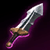
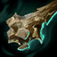

Naafiri Bot
Companion guide for soup minion#NA1 · Patch 26.13 · July 2026
Labels: VERIFIED multi-source / re-fetched · SINGLE SOURCE · REASONING. Kit, combos, and item encyclopedia live in the mid guide. Read the sample sizes here — bot is 0.6% of her games; nothing bot-specific has mid-sized data.
VERIFIED Naafiri bot (carry position) is a legitimate niche pick, not a troll pick — but the data is thin and split: lolalytics has her at 52.8% over 1,290 Emerald+ games; skill-capped's cut says 48.0% over 999. Truth: somewhere in "roughly even, playable when conditions are right." Pick it when the enemy botlane is immobile and low-poke; don't first-pick it. Naafiri support is a troll pick: 43.3% over 1,059 games — the one role verdict in this project that isn't close.
REASONING (no site publishes duo-lane data at this sample size, so this section is mechanics, labeled as such):
| Primary — Domination | Secondary — Precision | Shards | Build order |
|---|---|---|---|
| Hail of Blades Sudden Impact Grisly Mementos Ultimate Hunter (bot swap — R uptime over gold) | Triumph Cut Down | Adaptive Adaptive Health |  Doran's Blade → Brutalizer → Voltaic (55.5% / 722 g) → Glutt. Greaves (56.0%) → Axiom Arc → Axiom Arc →  Serylda's → EoN (59.1% as 5th) / Serpent's Fang vs enchanters Serylda's → EoN (59.1% as 5th) / Serpent's Fang vs enchanters |
VERIFIED sequences / SINGLE SOURCE exact WRs. Notes: op.gg's HoB cohort bot is mediocre (48.3%, 431 g) while a Sorcery-secondary Transcendence variant runs 54.2% (177 g) — and lolalytics' highest-WR bot page is Summon Aery (56.5%, 271 g), which fits the pre-6 poke-bully reality. Translation: in a lane that's poke-heavy, your mid DFT/Sorcery instincts may genuinely beat HoB here; the data is too thin to settle it, so run what matches your lane read. Your DFT page (mid Setup B) is untracked bot — nobody plays it — but its logic transfers.
Summoners SINGLE SOURCE: lolalytics' best-shown pair is Flash + TP at 58.3% (127 games) — pilots treat her as a transplanted solo-laner, TP-ing back to hold the poke lead. Skill-capped says Flash+Ignite. Either is defensible; Heal is not (your support can carry Heal).
| Matchup | Signal | Note |
|---|---|---|
| vs Caitlyn | 58.2% over 110 games | The ONLY bot matchup clearing lolalytics' 100-game bar — and it's a stomp. Packmates shield the trap-headshot poke; post-6 R ignores her range advantage. If they lock Cait, Naafiri bot stops being a meme. |
| vs Ezreal 61.5 (n=52) · Jinx 58.3 (48) | directional only | Immobile/passive carries she dives on cooldown. |
| vs Ziggs 29.6 (27) · Samira 32.1 (28) · Senna ~29 (stale) · Ashe 46.7 (45) · Lucian ~46 (47) | directional only | The two death profiles: artillery poke and level-2 all-in. (Mobalytics lists Ziggs as a champ she counters — conflicting tiny samples; trust the pattern, not either number.) |
43.3% WR over 1,059 games; her best support rune page wins 44%. No gold = no lethality spikes = a champion whose entire kit scales on bonus AD, with no bonus AD. The one-line verdict: if you want Naafiri and got autofilled support, that's what role swaps and dodges are for.